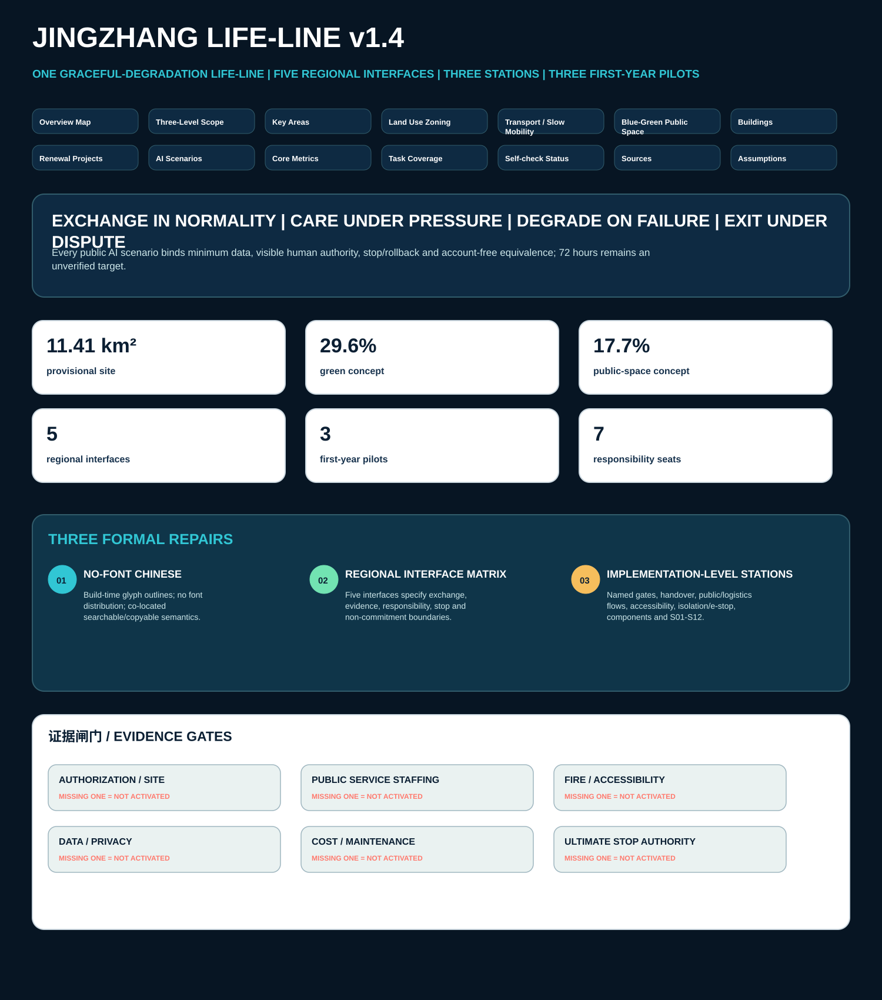

Jingzhang Life-Line v1.4 | Offline Visualization

Overview Map Three-Level Scope Key Areas Land Use Zoning Transport Slow Mobility Blue-Green Public Space Buildings Renewal Projects AI Scenarios Core Metrics Task Coverage Self-check Status Sources Assumptions